媒体作品
精选代表性新闻通讯、视频制作、时事评论——用多元形式记录时代，传递声音
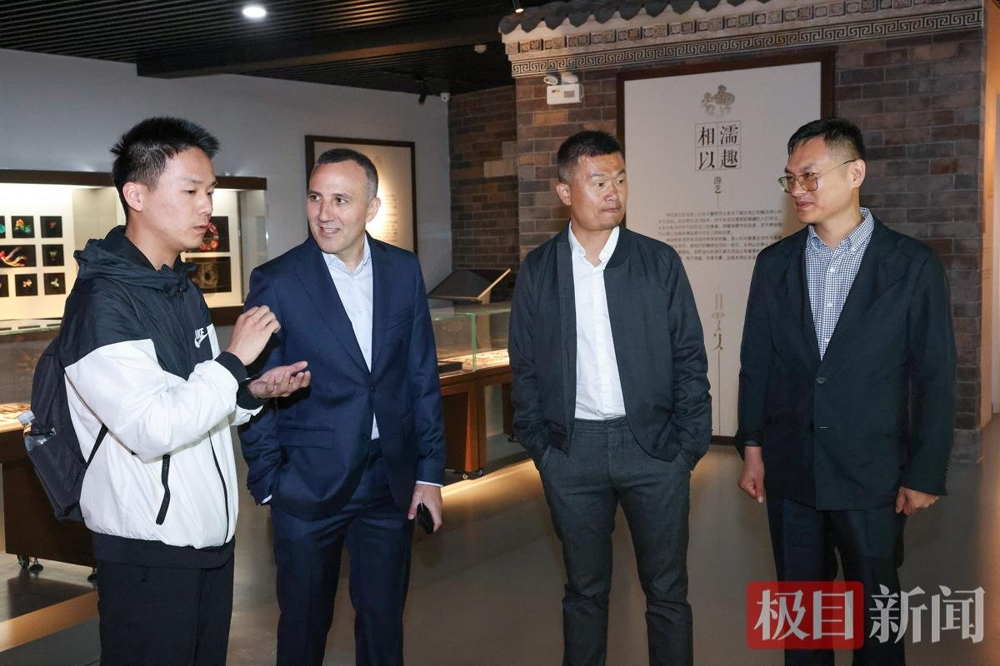
极目新闻
"AI只是工具，要多问为什么"，西班牙首席研究员受聘黄冈师院，建言传媒教育要"以人为本"
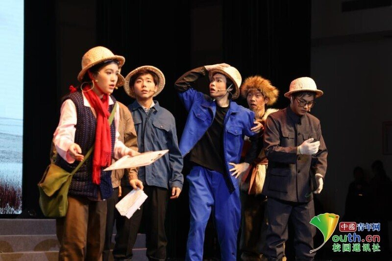
中国青年网校园通讯社
黄冈师范学院两部原创话剧亮相荆楚科普大秀场
大象新闻
寿苏贺诞辰 青春传文脉——黄师推普队赋能东坡文化国际传播
荆楚网（湖北日报网）
黄师学子为团风中学三千多名师生献演《地脉寻踪》
大学生云报
跑一场马，识一座城——大别山跑团顺利完赛2025黄冈半程马拉松
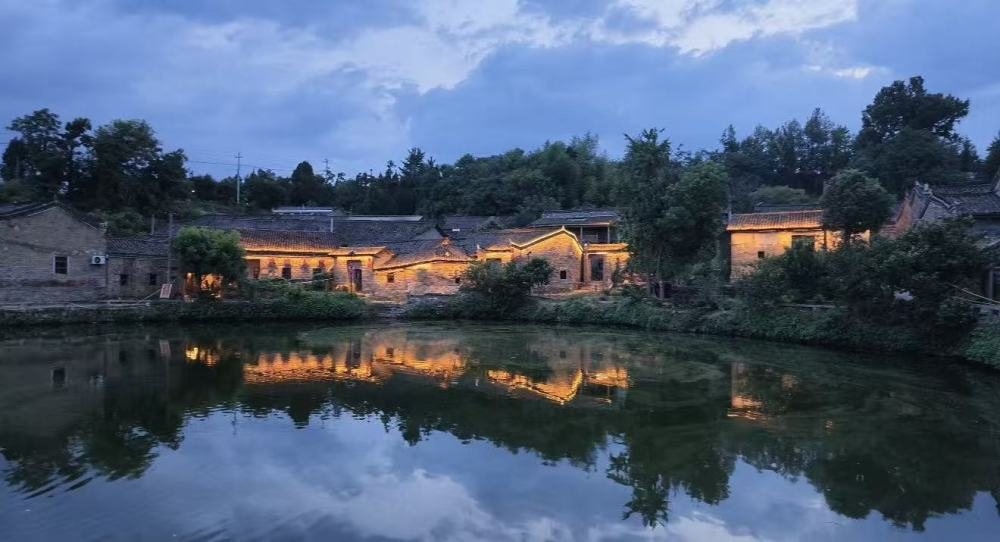
中国青年网
东垸村从哪里来？又该到哪里去？黄冈师范学院大别山推普队走进东垸村的观察
中国网
蓉香美味馆：藏在烟火巷中的年味
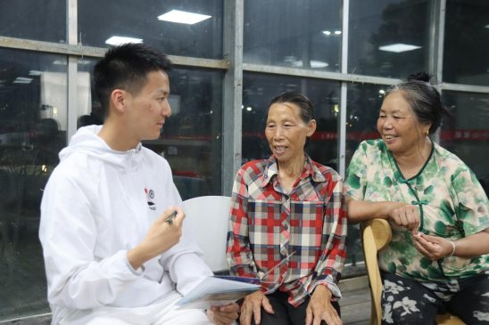
湖北日报
产业赋能推普 红韵浸润乡村——大别山精神推普队解码燕儿谷经验密码
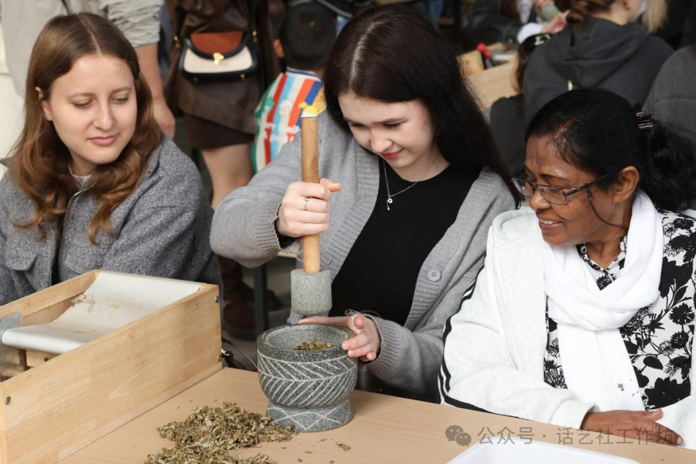
黄冈日报
当"洋面孔"遇见"老传统"——黄冈师院130余名外籍师生畅享文化体验之旅
中华网
从智慧推普到28个节目，遗爱湖社区的"六一"有点不一样
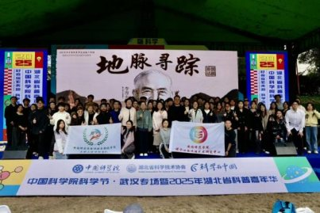
新华网
黄冈师院两部原创话剧亮相中科院科学节武汉专场
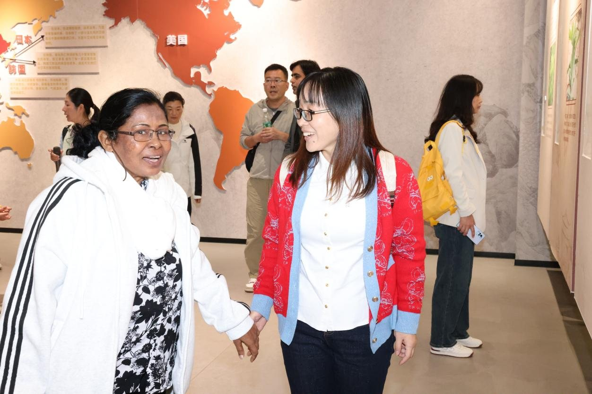
湖北日报
大别山推普队帮"洋面孔"解码中国非遗
精选
精选
精选
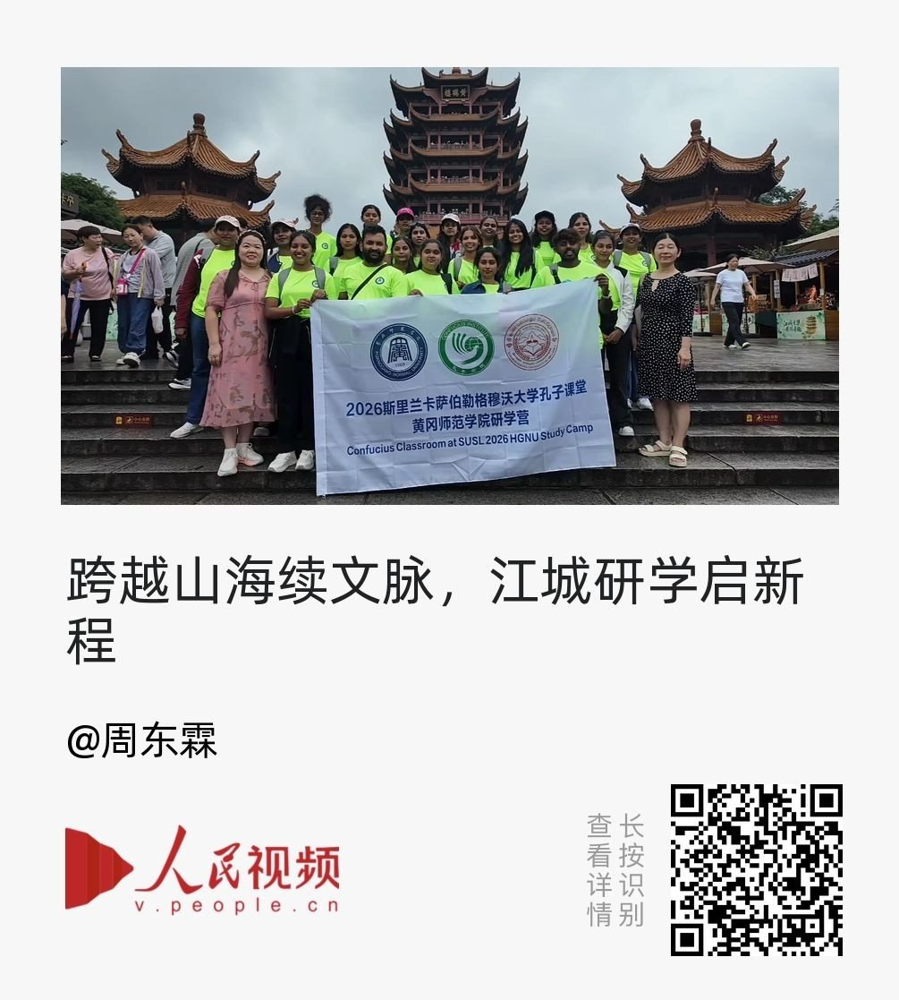
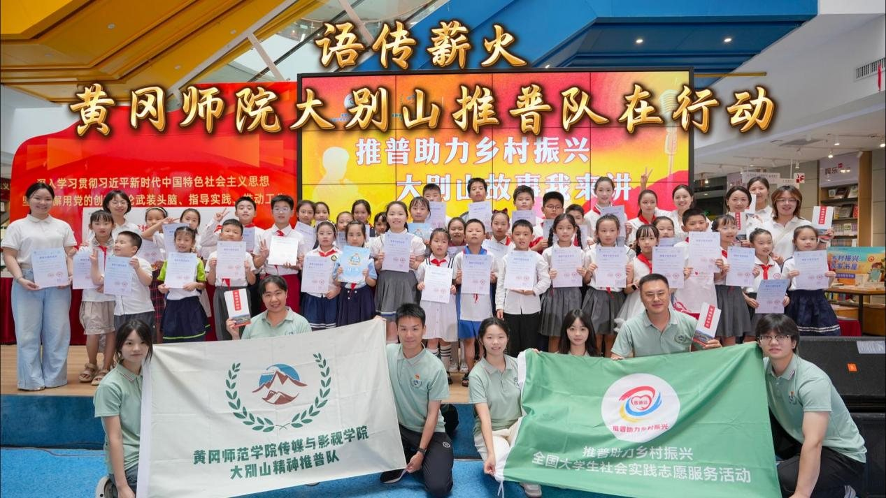
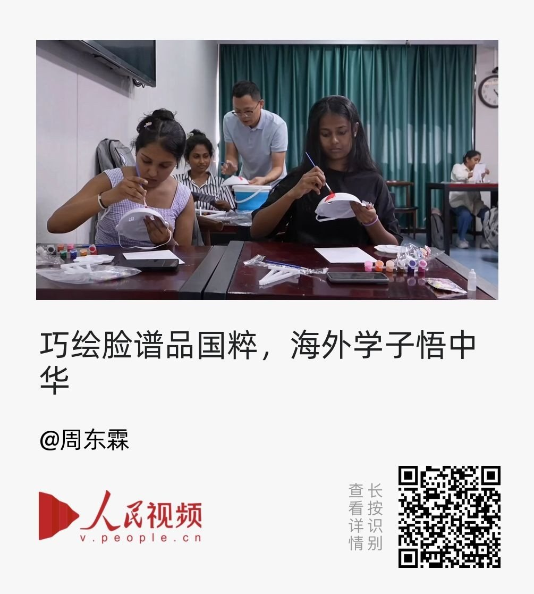
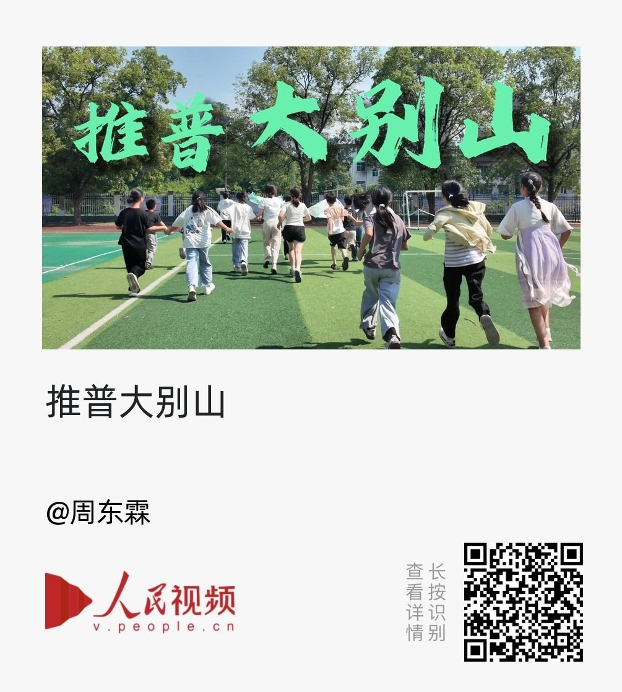
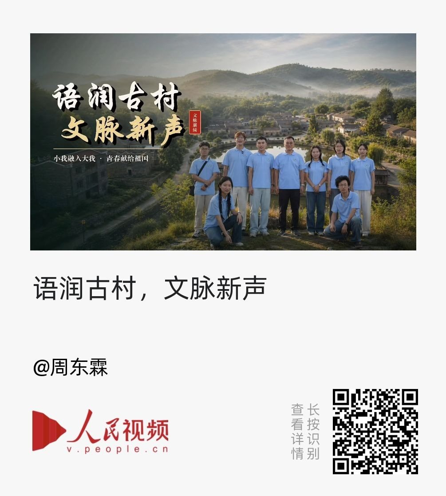
语润古村，文脉新声
十五天行走大别山多个古村落。访青年创业者、听百姓家常、寻乡土文脉。以传媒专业之力，用镜头记录古村风貌，用文字讲好乡村故事。以青春小我，汇入乡村振兴时代洪流。让千年古村，听见青年新声。
在新标签页打开
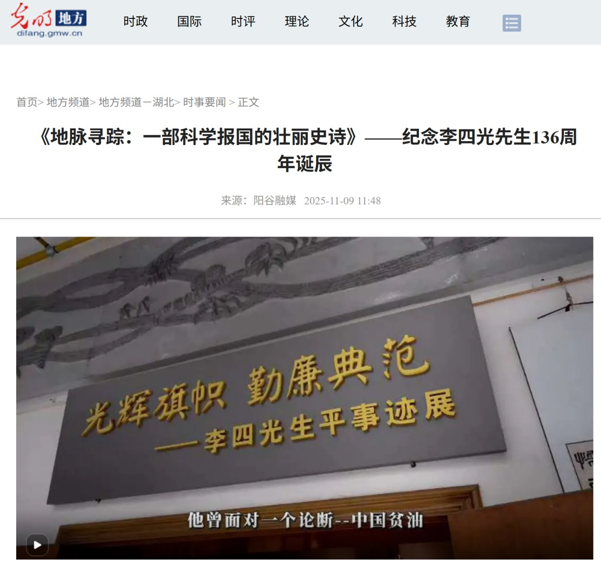